P1-probeta-encaje). El muñeco Lúa es Lúa V5, el cubo de luz (108 × 108 mm).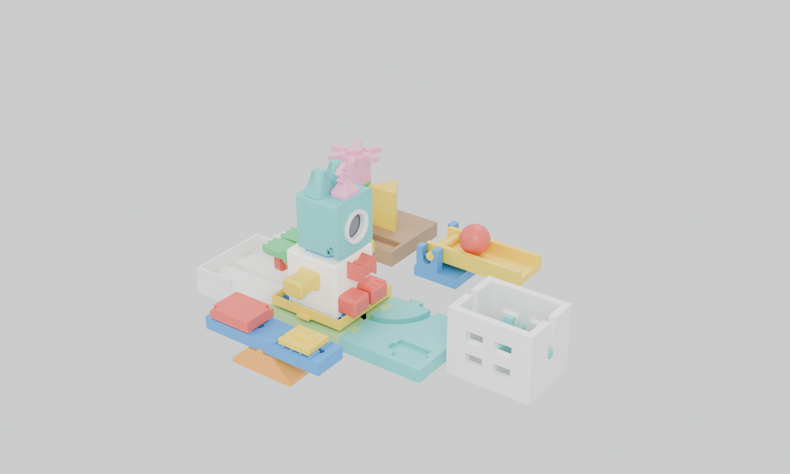
| Carpeta | Conjunto / Fase | STL | Masa | Estado y alcance |
|---|---|---|---|---|
| P1-probeta-encaje | Fase 1 · Probetas de encaje G y E | 12 | 306 g | Se imprime ANTES que los sets (holguras 0,15 / 0,20 / 0,25 mm) |
| 00-comun | Fase 2 · Zócalo, patín, 7 placas y 6 pilares | 15 | 760 g | Común a los sets 1 a 6 · Huella de Lúa V5 (cubo 108×108 mm) |
| S1-camino | Fase 3 · Set 1: El Camino de Lúa | 10 (23 ud) | 1303 g | Baldosas con colas de milano, fichas de orden y 2 destinos |
| S2-estacion-sonido | Fase 7 · Set 2: La Estación de Sonido y Eco | 13 (14 ud) | 1831 g | Martillo articulado, 9 resonadores (A/B/C), raspadores y espátula |
| S3-laboratorio-rampas | Fase 5 · Set 3: Laboratorio de Rampas y Gravedad | 7 (9 ud) | 684 g | Bisagra en C, rampa L=8H, fricción, curva peraltada, receptor y esferas |
| S4-maquina-soplo | Fase 8 · Set 4: La Máquina de Soplo y Viento | 8 (9 ud) | 989 g | Canal, codo 90°, rotor E, molinete G y 2 compuertas (sin embocadura) |
| S5-puente-equilibrio | Fase 4 · Set 5: El Puente de Equilibrio y Fuerza | 6 (10 ud) | 415 g | Fulcro redondeado, viga de 186 mm, masas 20/40/60 g y clips en U |
| S6-jardin | Fase 6 · Set 6: El Jardín del Sol y la Semilla | 12 (16 ud) | 1274 g | Tierra, semilla, 5 tallos roscados, flor, copa, 3 frutos, prismas y sombras |
| NO-IMPRIMIR (S7) | Set 7 · La Granja de Lúa (excluido del ZIP) | 0 | — | Escena de la app con partes en el aire · Pendiente de despiezar |
| S8..S11 (Oficios) | Sets 8, 9, 10 (60 %) y Set 11 (33 %) · Maquetas | 4 | 1379 g | Escenas decorativas de una pieza sin soporte · No son sets de bloques |
Circuito físico de orientación espacial y secuencias paso a paso. El niño mira a Lúa V5 desde atrás para que la izquierda y la derecha de Lúa coincidan con las manos del niño. Las baldosas se unen por colas de milano verticales (resisten el empuje horizontal sin soltarse).
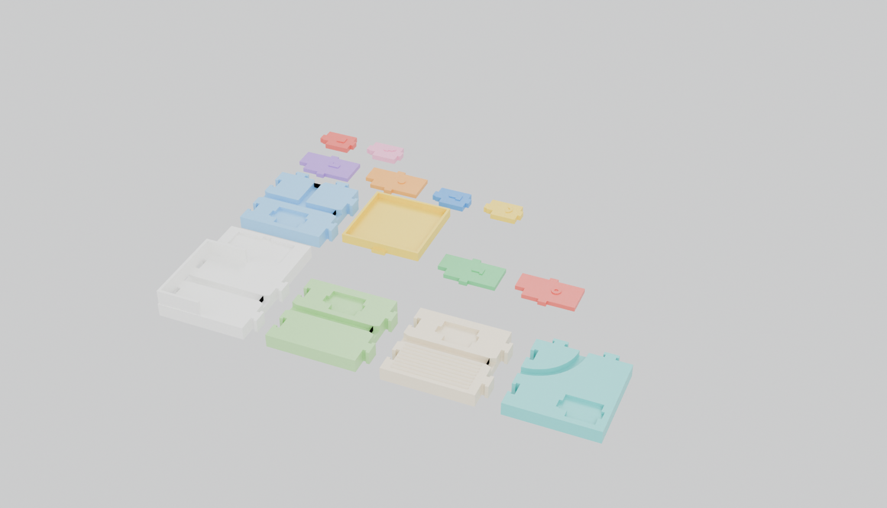
| Código STL | Pieza | Ud. | Dimensiones | Unión / Detalle |
|---|---|---|---|---|
| S1-REC-LIS-G | Baldosa recta lisa con ranura de 12 mm y pozo | 4 | 136,8 × 127,2 × 19,2 mm | Colas de milano macho (+X) y hembra (0) |
| S1-REC-RUG-G | Baldosa recta rugosa (nervios táctiles de 1,5 mm) | 2 | 136,8 × 127,2 × 20,7 mm | Relieve redondeado en el lado −Y |
| S1-CUR-G | Baldosa curva de 90° con cuarto de anillo | 4 | 127,2 × 136,8 × 19,2 mm | Hembra en X=0 y macho en Y=127,2 mm |
| S1-TEE-G | Baldosa de bifurcación en T (tres bocas) | 1 | 136,8 × 136,8 × 19,2 mm | Paso recto en X y rama lateral hacia +Y |
| S1-CMD-AVA/GIR/PAR/SAL-G | Fichas de orden: Avanza (4), Gira (3), Para (2), Salta (1) | 10 | 57,6 × 36,0 × 9,4 mm | Snap lateral + recorte de llave 10,2 mm |
| S1-DEST-CAMA / PARQUE | Placas de destino: Cama y Parque | 2 | 89,6 × 54,0 × 7,8 mm | Entran en el bolsillo del segundo zócalo |
| K-ZOCALO-G + K-PATIN-G | Zócalo universal (×2) + Bandeja patín (de 00-comun) | 2 + 1 | 136,8×190,8 / 116×122 mm | Inicio y Meta + bandeja guía de Lúa V5 |
ES: Encaja la placa K-PLACA-INICIO en el bolsillo lateral del zócalo hasta notar el clic. Alinea las dos colas de milano hembra de S1-REC-LIS-G sobre los machos frontales del zócalo y desliza verticalmente hacia abajo hasta que las bases apoyen en la mesa.
GL: Encaixa a placa K-PLACA-INICIO no peto lateral do zócalo ata notar o clic. Aliña as dúas colas de milano femia de S1-REC-LIS-G sobre os machos frontais do zócalo e desliza cara abaixo.
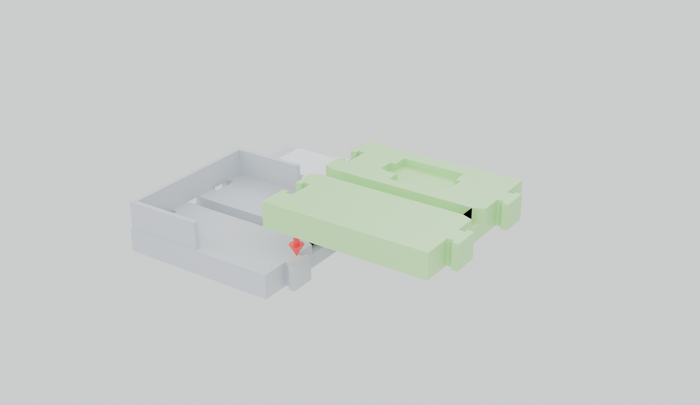
ES: Continúa encadenando de arriba abajo los tramos rectos o rugosos, la te de bifurcación S1-TEE-G y las curvas S1-CUR-G. Cierra el final del camino acoplando el segundo zócalo con K-PLACA-META o con las placas de destino S1-DEST-CAMA / S1-DEST-PARQUE.
GL: Continúa encadeando de arriba abaixo os tramos rectos ou rugosos, a bifurcación S1-TEE-G e as curvas S1-CUR-G. Pecha o final co segundo zócalo e a placa de Meta ou Destino.
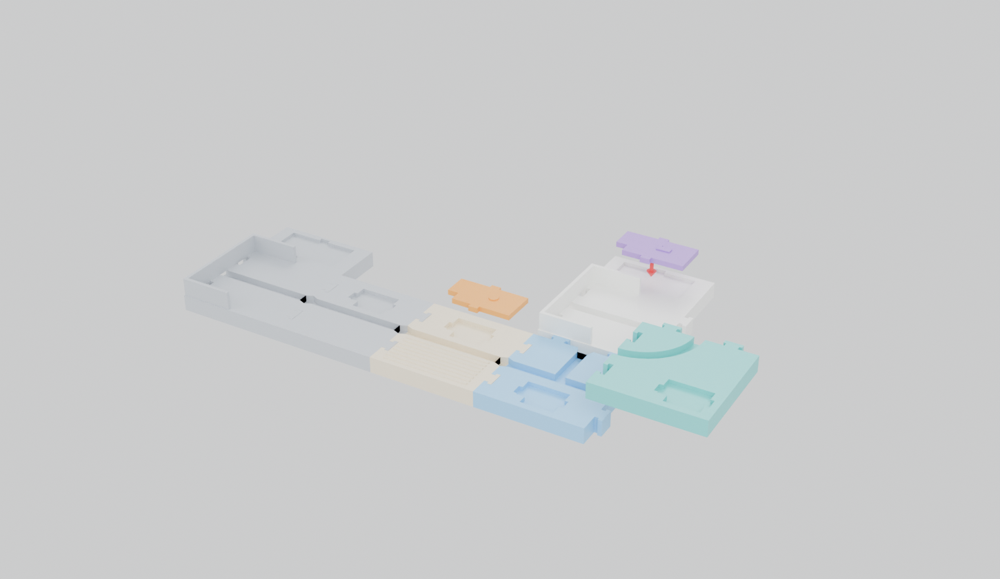
ES: Baja cada ficha S1-CMD-* en el pozo de su baldosa haciendo coincidir la esquina recortada con el poste de llave hasta oír el snap. Pon la bandeja K-PATIN-G en la ranura de 12 mm, apoya dentro a Lúa V5 mirando al frente del camino y deslízala siguiendo las órdenes.
GL: Baixa cada ficha S1-CMD-* no pozo da súa lousa facendo coincidir a esquina recortada co poste de chave ata oír o snap. Pon o patín K-PATIN-G na rañura de 12 mm e apoia dentro a Lúa V5.
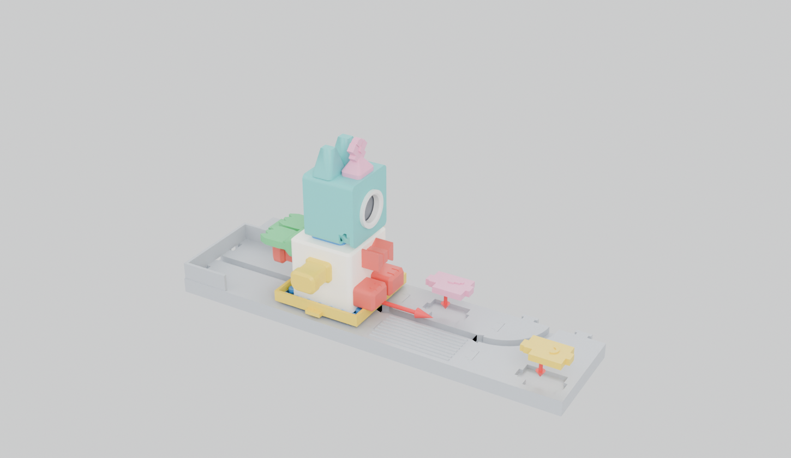
Exploración acústica analógica de timbre, altura tonal (grave, medio, agudo) y ritmo mediante percusión y raspado. Lúa V5 se coloca de frente al niño sobre el zócalo con la placa Escucha; la tableta nunca emite audio encima del sonido físico de la pieza.
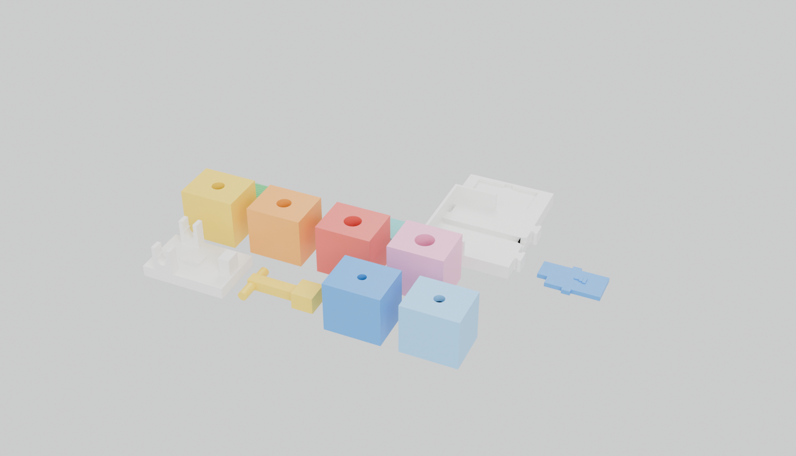
| Código STL | Pieza | Ud. | Dimensiones | Unión / Detalle |
|---|---|---|---|---|
| S2-BAL-BASE-E | Banco del martillo con mejillas en C | 1 | 120,0 × 78,0 × 52,0 mm | Aloja el eje del brazo sin pasadores sueltos |
| S2-BAL-BRAZO-E | Brazo del martillo con eje integral y maza | 1 | 98,4 × 58,0 × 28,0 mm | Eje Ø10,4 mm integrado en una sola pieza |
| S2-RES-AZU-E-A/B/C | Resonador grave (azul) · variantes A, B y C | 3 | 78,0 × 64,0 × 72,0 mm | Cavidad r=16 mm, prof 46/40 mm, garganta 6/7,2 mm |
| S2-RES-AMA-E-A/B/C | Resonador medio (amarillo) · variantes A, B y C | 3 | 78,0 × 64,0 × 72,0 mm | Cavidad r=13 mm, prof 34/28 mm, garganta 9/10,2 mm |
| S2-RES-ROJ-E-A/B/C | Resonador agudo (rojo) · variantes A, B y C | 3 | 78,0 × 64,0 × 72,0 mm | Cavidad r=10 mm, prof 24/18 mm, garganta 12/13,2 mm |
| S2-RAS-E | Raspador estriado encadenable | 2 | 144,0 × 44,0 × 18,2 mm | 11 estrías redondeadas (r=2,2 mm) + espiga y mortaja |
| S2-ESP-E | Espátula sin filo (punta semicilíndrica) | 1 | 122,0 × 44,0 × 16,0 mm | Punta redondeada r=7 mm · Incluye mortaja trasera |
| K-ZOCALO-G + ESCUCHA | Zócalo universal + Placa Escucha (de 00-comun) | 1 + 1 | 136,8 × 190,8 × 40,8 mm | Lúa V5 mira de frente al niño (sin espejo) |
ES: Apoya el banco S2-BAL-BASE-E en la mesa. Alinea los dos extremos del eje integral de S2-BAL-BRAZO-E sobre las bocas superiores en C de las mejillas del banco y presiona recto hacia abajo hasta que el eje entre en su alojamiento cilíndrico y bascule libremente.
GL: Apoia o banco S2-BAL-BASE-E na mesa. Aliña o eixe integral de S2-BAL-BRAZO-E sobre as bocas en C das meixelas do banco e preme recto cara abaixo ata que bascule libremente.
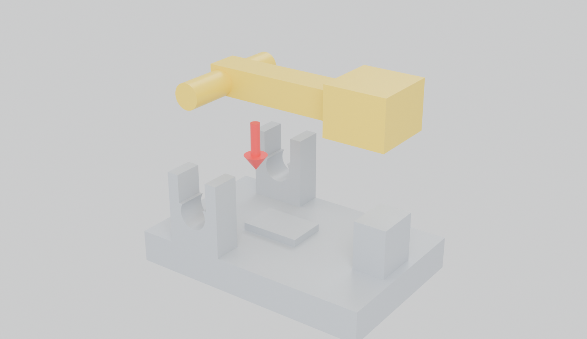
ES: Coloca un resonador ante la maza del martillo con la boca circular hacia arriba. En el taller, prueba con el martillo las variantes A, B y C de cada color (Azul grave, Amarillo medio, Rojo agudo) para elegir el trío cuyo timbre se distinga mejor al oído.
GL: Coloca un resoador ante a maza do martelo coa boca circular cara arriba. Proba as variantes A, B e C de cada cor (Azul grave, Amarelo medio, Vermello agudo) e escolle as que soen máis distintas.
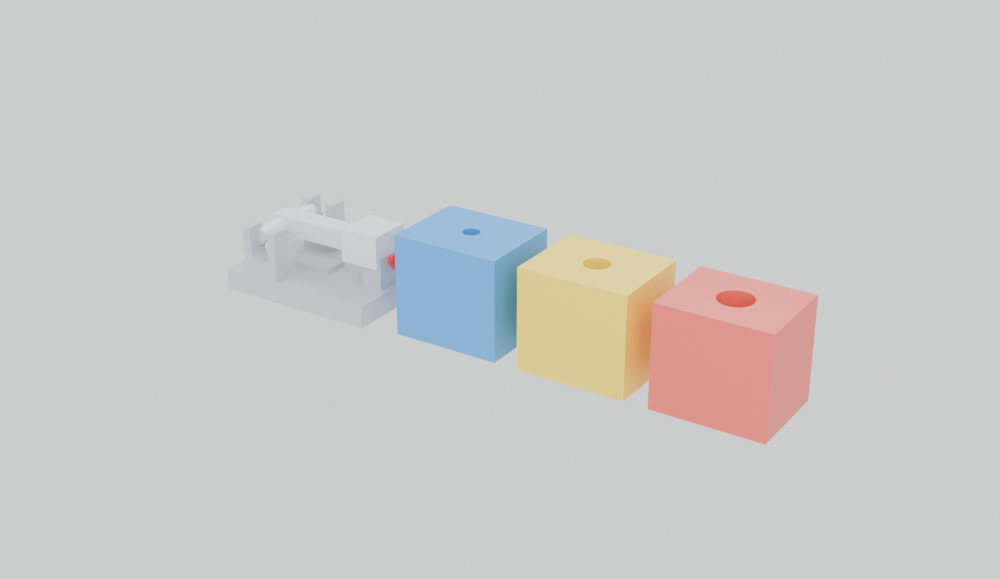
ES: Para un recorrido de raspado largo, introduce la espiga saliente de un S2-RAS-E en la mortaja del segundo S2-RAS-E. Desliza la punta redondeada de S2-ESP-E sobre las estrías. Coloca al lado el zócalo con K-PLACA-ESCUCHA y a Lúa V5 mirando de frente al niño.
GL: Introduce a espiga dun S2-RAS-E na mortaxa do segundo S2-RAS-E e desliza a espátula S2-ESP-E sobre as estrías. Coloca ao lado o zócalo con K-PLACA-ESCUCHA e a Lúa V5 mirando de fronte.
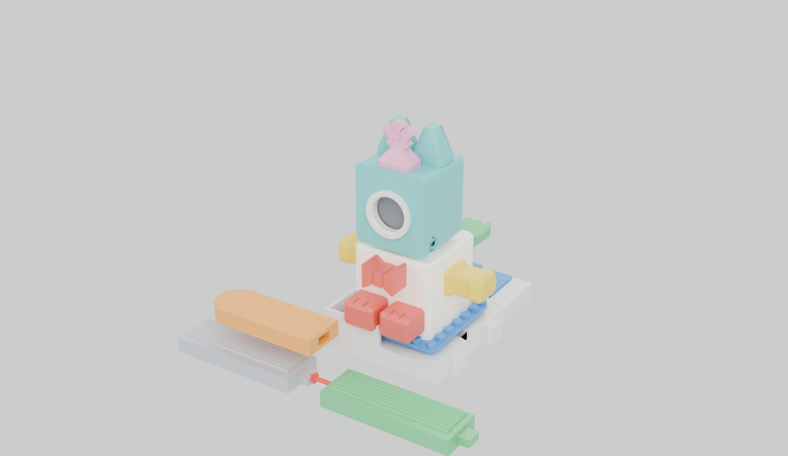
Experimentación física de pendiente, velocidad, rozamiento y conservación del movimiento. La altura modular es H = 19,20 mm (para que la rampa L = 8H = 153,60 mm quepa en la cama de 220 mm). Las dos esferas miden Ø45,0 mm (> 44,5 mm EN 71-1) y diferencian liso frente a rugoso sin piezas sueltas.
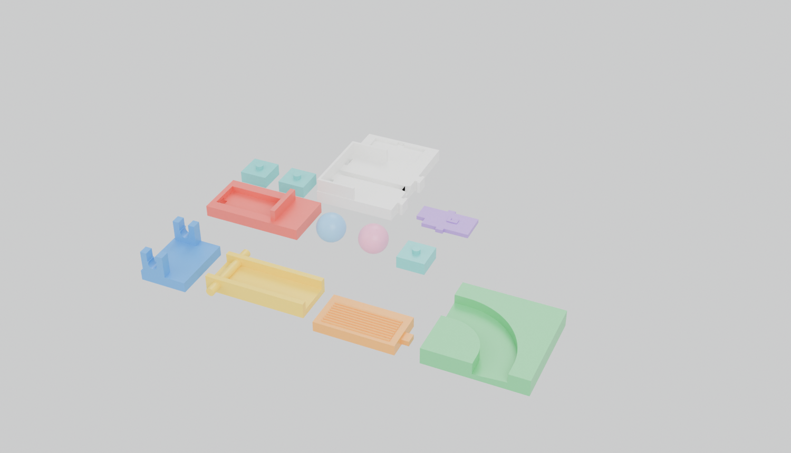
| Código STL | Pieza | Ud. | Dimensiones | Unión / Detalle |
|---|---|---|---|---|
| S3-BIS-G | Bloque bisagra con alojamiento en C | 1 | 72,0 × 96,0 × 50,0 mm | Recibe el eje de la rampa sin pasador suelto |
| S3-RAM-G | Rampa articulada en U con eje transversal | 1 | 153,6 × 100,0 × 24,0 mm | Canal interior de 48 mm para esferas de Ø45 mm |
| S3-PIL-1..6-G | Pilares apilables con 1 a 6 barras táctiles (de 00-comun) | 6 | 44,0 × 47,2 × 25,2 mm | Altura útil H = 19,20 mm · Tetón superior y pozo inferior |
| S3-FRI-G | Tramo de fricción reversible (9 nervios cilíndricos) | 1 | 132,0 × 64,0 × 17,8 mm | Cara superior nervada y cara inferior lisa + lengüeta |
| S3-CUR-PER-G | Curva peraltada de 90° (canal de revolución) | 1 | 150,0 × 150,0 × 26,0 mm | Fondo peraltado (z=8 mm dentro, z=12 mm fuera) |
| S3-REC-G | Receptor final con lengüeta de parada | 1 | 156,0 × 80,0 × 36,0 mm | Detiene la esfera 40 mm antes del borde trasero |
| S3-ESF-LIS-G / RUG-G | Esferas Ø45 mm: 2 lisas y 2 rugosas (14 botones) | 2 + 2 | Ø45,0 mm | Superan el umbral de 44,5 mm para menores de 3 años |
| K-ZOCALO-G + RECEPTOR | Zócalo universal + Placa Receptor (de 00-comun) | 1 + 1 | 136,8 × 190,8 × 40,8 mm | Se sitúa detrás del receptor final |
ES: Asienta el bloque bisagra S3-BIS-G y baja el eje transversal de la rampa S3-RAM-G dentro de su boca en C superior. Apila bajo la rampa los pilares graduados S3-PIL-1..6-G: dos pilares dan pendiente suave; cuatro pilares dan pendiente pronunciada.
GL: Asenta o bloque bisagra S3-BIS-G e baixa o eixe transversal da rampa S3-RAM-G na boca en C. Apila baixo a rampa os piares S3-PIL-1..6-G segundo a pendente buscada.
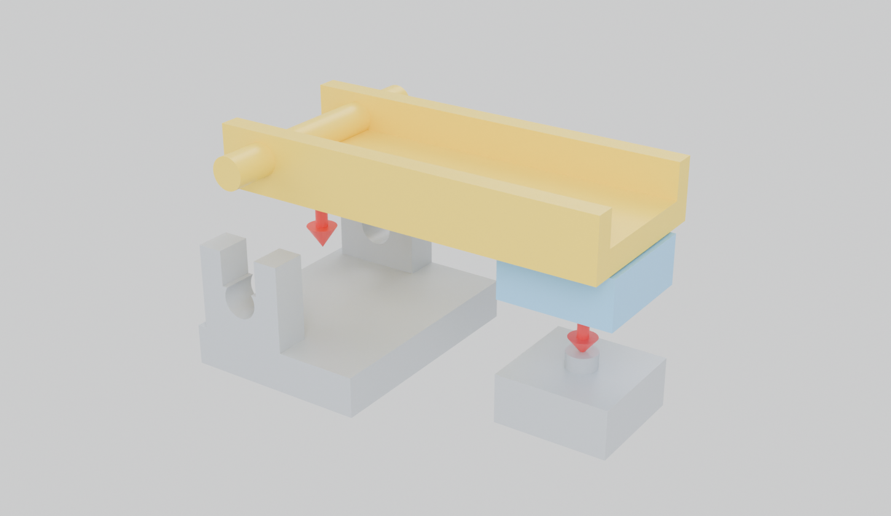
ES: A la salida de la rampa, acopla el tramo de fricción S3-FRI-G (con los nervios hacia arriba para frenar la esfera, o volteado del lado liso para dejarla correr) y, si el reto lo pide, encadena la curva peraltada de 90° S3-CUR-PER-G.
GL: Á saída da rampa, acopla o tramo de fricción S3-FRI-G (cos nervios cara arriba para frear ou liso para correr) e, se o reto o pide, a curva peraltada S3-CUR-PER-G.
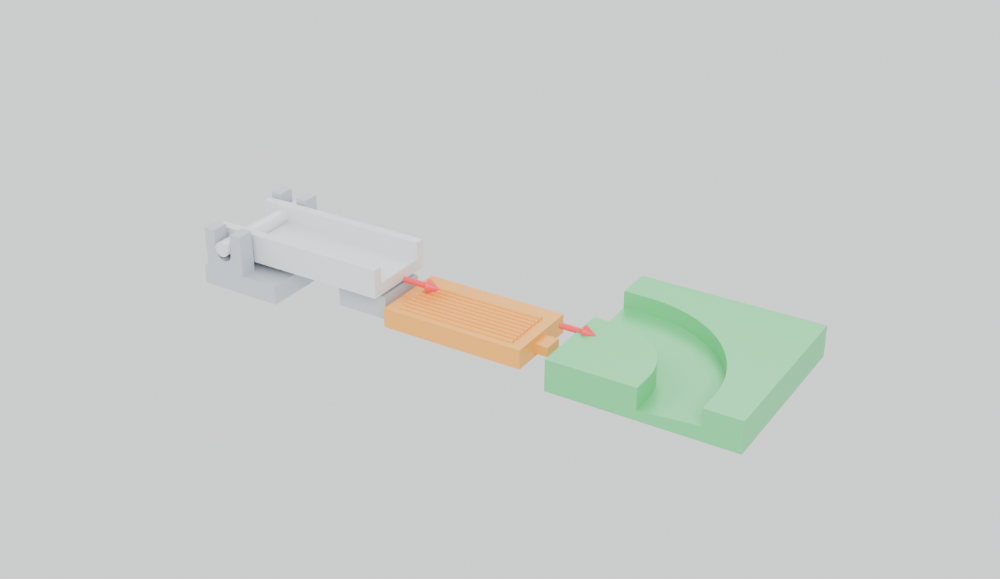
ES: Encaja la mortaja frontal del receptor S3-REC-G en la lengüeta del tramo anterior, con la pared de parada mirando hacia la rampa. Sitúa detrás el zócalo con K-PLACA-RECEPTOR y a Lúa V5, y suelta desde arriba la esfera lisa o rugosa para comparar su llegada.
GL: Encaixa o receptor S3-REC-G coa lingüeta mirando cara á rampa. Sitúa detrás o zócalo con K-PLACA-RECEPTOR e a Lúa V5, e solta desde arriba a esfera lisa ou rugosa.
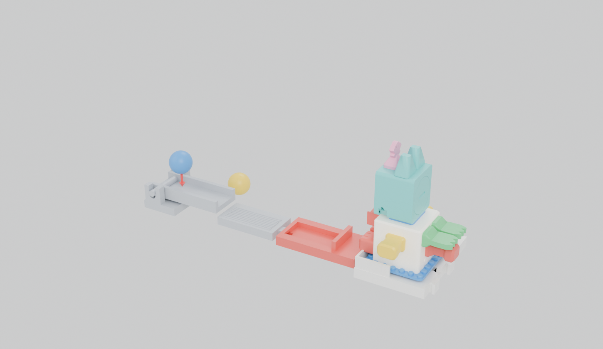
Juego aerodinámico de causa-efecto (dirección del aire y resistencia mecánica entre compuerta ligera y pesada). Finalidad exclusivamente lúdica y educativa: no es un espirómetro ni un tratamiento del velo. Las jaulas son abiertas por arriba con cunas en U en las paredes X para apoyar el eje de las aspas.
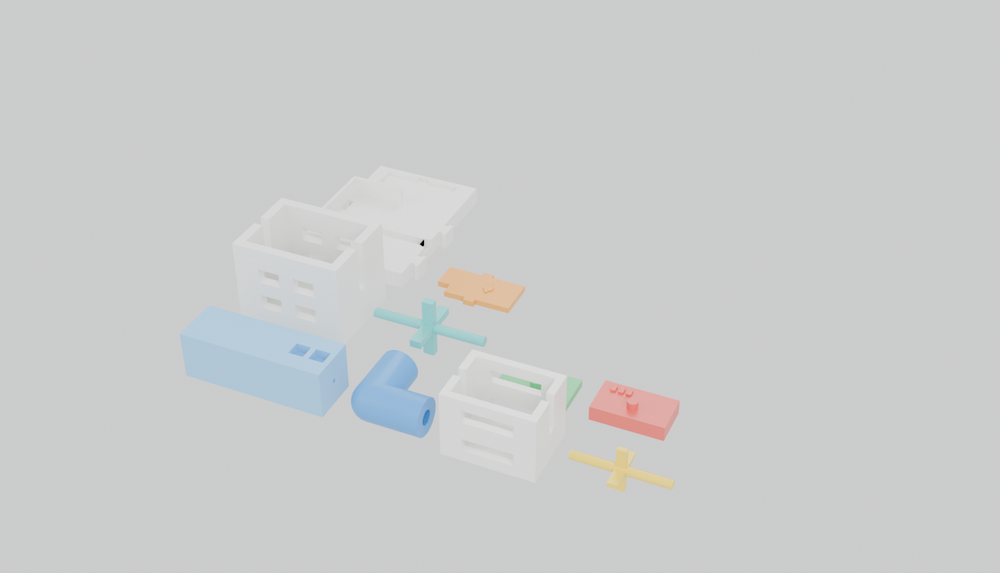
| Código STL | Pieza | Ud. | Dimensiones | Unión / Detalle |
|---|---|---|---|---|
| S4-CAN-E | Cuerpo del canal aerodinámico con tobera Ø4 mm | 2 | 156,0 × 52,0 × 52,0 mm | Conducto interior cónico Ø24 → Ø4 mm + 2 pozos arriba |
| S4-COD-E | Codo de 90° para desviar el flujo de aire | 1 | 78,0 × 78,0 × 40,0 mm | Tubo interior r=8 mm y pared exterior r=20 mm |
| S4-ROT-JAULA-E | Jaula abierta del rotor con cunas en U | 1 | 96,0 × 72,0 × 72,0 mm | Pared de 8 mm, ventanas de aire y cuna r=5,4 mm |
| S4-ROT-ASPAS-E | Rotor de 4 aspas con eje integral | 1 | 98,0 × 48,0 × 48,0 mm | Eje Ø9,2 mm que asoma 1 mm por cada lado de la jaula |
| S4-MOL-JAULA-G | Jaula abierta del molinete (escala G) | 1 | 120,0 × 96,0 × 96,0 mm | Pared de 10 mm y cunas en U de r=6,2 mm |
| S4-MOL-ASPAS-G | Aspas anchas del molinete con eje integral | 1 | 122,0 × 64,0 × 64,0 mm | Eje Ø10,4 mm · Para soplo del adulto en etapa I2 |
| S4-COM-LIG-E / PES-E | Compuerta ligera (1 barra, 8 mm) y pesada (3 barras, 16 mm) | 1 + 1 | 76,0 × 44,0 × 16/24 mm | Diferencia de masa por volumen de PLA (sin lastre suelto) |
| K-ZOCALO-G + FRONTAL | Zócalo universal + Placa Frontal (de 00-comun) | 1 + 1 | 136,8 × 190,8 × 40,8 mm | Lúa V5 mira de frente al niño |
ES: Toma la jaula S4-ROT-JAULA-E (o S4-MOL-JAULA-G para el molinete grande) e introduce desde arriba el eje integral de las aspas S4-ROT-ASPAS-E (o S4-MOL-ASPAS-G) en las dos cunas en U de las paredes laterales. Comprueba con el dedo que gira libre sin rozar.
GL: Toma a gaiola S4-ROT-JAULA-E (ou S4-MOL-JAULA-G) e introduce desde arriba o eixe integral das aspas nos dous berces en U das paredes laterais. Comproba que xira sen rozar.
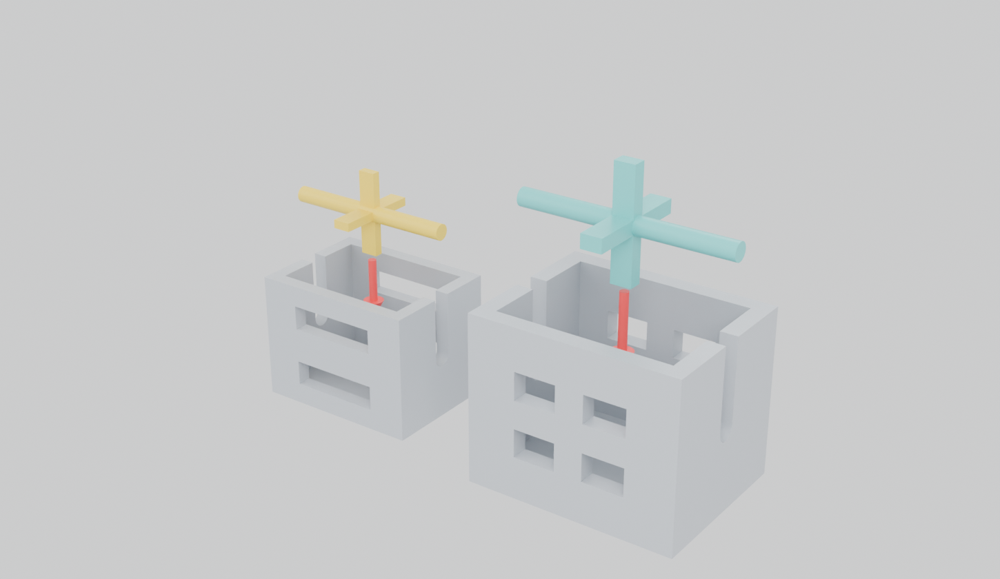
ES: Sitúa el canal S4-CAN-E en la mesa y, si el reto pide doblar el recorrido del aire, enchufa en su boca el codo de 90° S4-COD-E. Clava la espiga de la compuerta ligera S4-COM-LIG-E (1 barra táctil) o de la pesada S4-COM-PES-E (3 barras táctiles) en los pozos superiores del canal.
GL: Sitúa a canle S4-CAN-E na mesa e, se o reto o pide, acopla o cóbado S4-COD-E. Crava a comporta lixeira S4-COM-LIG-E (1 barra) ou a pesada S4-COM-PES-E (3 barras) nos pozos superiores.
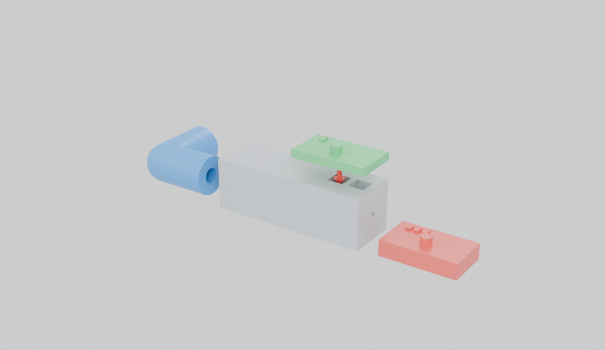
ES: Alinea el orificio de salida del canal (Ø4 mm) frente a la ventana de la jaula del rotor o del molinete. Coloca al lado el zócalo con la placa K-PLACA-FRONTAL y a Lúa V5 mirando al niño.
GL: Aliña o orificio de saída da canle (Ø4 mm) fronte á xanela da gaiola do rotor ou do muíño. Coloca ao lado o zócalo coa placa K-PLACA-FRONTAL e a Lúa V5 mirando ao neno.
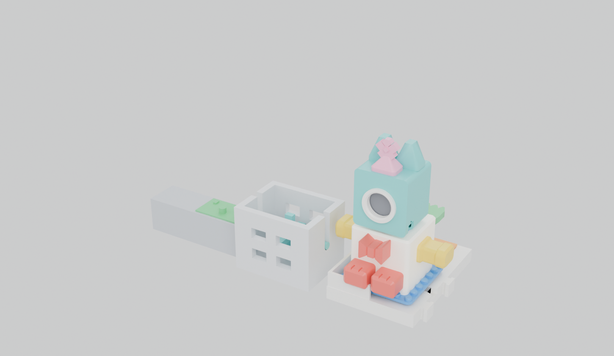
Palanca de primer género, ley del equilibrio (masa × distancia al fulcro) y construcción de un puente fijo estable. La viga mide 186 × 48 × 18 mm (diez módulos de 31,80 mm medirían 318 mm y no cabrían en la cama de 220 mm) e incorpora 5 pozos numerados a cada lado con marcas táctiles en los bordes.
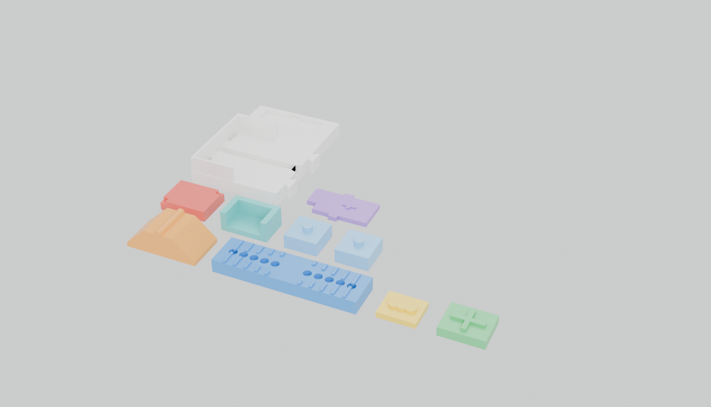
| Código STL | Pieza | Ud. | Dimensiones | Unión / Detalle |
|---|---|---|---|---|
| S5-FUL-G | Fulcro prismático con lomo cilíndrico redondeado | 1 | 96,0 × 52,0 × 37,0 mm | Arista superior cilíndrica r=5 mm y zócalo vertical de 6 mm |
| S5-VIG-G | Viga balancín con 5 posiciones por brazo | 1 | 186,0 × 48,0 × 19,8 mm | Rebaje central para el fulcro + marcas táctiles 1 a 5 |
| S5-MAS-20 | Masa de referencia 20 g (relieve de nube) | 2 | 48,0 × 40,0 × 15,8 mm | Volumen 14,6 cm³ · Tres botones superiores en línea |
| S5-MAS-40 | Masa de referencia 40 g (relieve de hoja / cruz) | 1 | 56,0 × 46,0 × 20,4 mm | Volumen 30,8 cm³ · Relieve táctil en cruz arriba |
| S5-MAS-60 | Masa de referencia 60 g (chaflán facetado) | 1 | 64,0 × 50,0 × 20,1 mm | Volumen 48,2 cm³ · Esquinas superiores achaflanadas |
| S5-PAS-G | Clip de puente en U (sustituye a pasadores pequeños) | 4 | 64,0 × 40,0 × 28,0 mm | Abraza la viga por encima · Cumple EN 71-1 (> 31,75 mm) |
| S3-PIL-1..6-G + NIVEL | Pilares graduados + Zócalo + Placa Nivel (de 00-comun) | 6 + 2 | 44×47,2 / 136,8×190,8 mm | Estribos del puente fijo y asiento lateral de Lúa V5 |
ES: Asienta el fulcro S5-FUL-G en la mesa con su lomo cilíndrico hacia arriba. Baja el rebaje central inferior de la viga S5-VIG-G sobre el lomo del fulcro: el rebaje centra la viga sin partirla y permite que bascule a izquierda y derecha.
GL: Asenta o fulcro S5-FUL-G na mesa co lombo cilíndrico cara arriba. Baixa o rebaixe central inferior da viga S5-VIG-G sobre o lombo do fulcro para que bascule libremente.
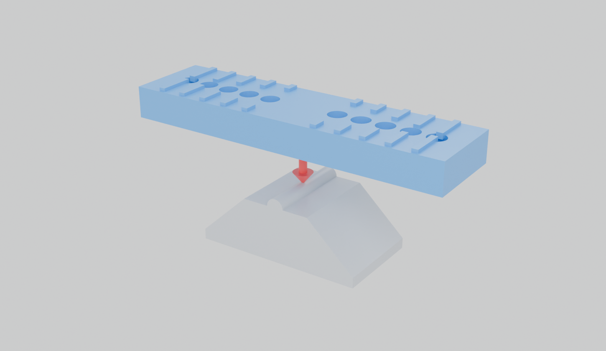
ES: Cada lado de la viga tiene 5 pozos (identificados en el borde por barras táctiles de longitud creciente 1 a 5). Clava el tetón inferior de S5-MAS-60 en la posición 1 de un brazo y el de S5-MAS-20 en la posición 3 del brazo opuesto para comprobar que 60 × 1 equilibra a 20 × 3.
GL: Cada lado da viga ten 5 pozos numerados no bordo. Crava S5-MAS-60 na posición 1 dun brazo e S5-MAS-20 na posición 3 do brazo oposto para comprobar que 60 × 1 equilibra a 20 × 3.
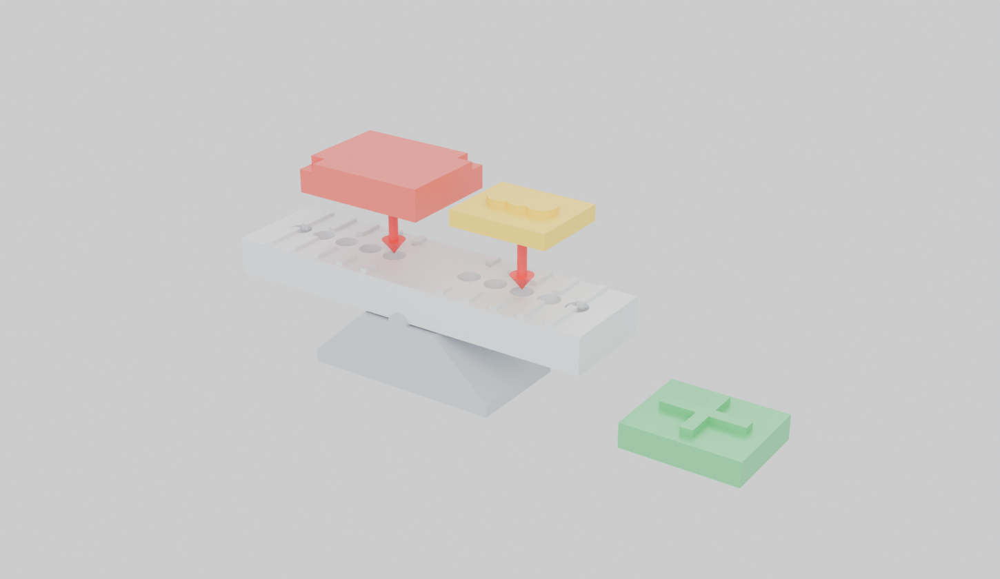
ES: Retira el fulcro, levanta dos torres de igual altura con los pilares S3-PIL-* bajo los extremos de la viga y baja los clips en U S5-PAS-G por encima para inmovilizar el tablero. Coloca al lado el zócalo con K-PLACA-NIVEL y a Lúa V5 vista desde atrás.
GL: Retira o fulcro, apoia os extremos da viga sobre dúas torres iguais de piares S3-PIL-* e baixa os clips en U S5-PAS-G por riba. Pon ao lado o zócalo con K-PLACA-NIVEL e a Lúa V5.
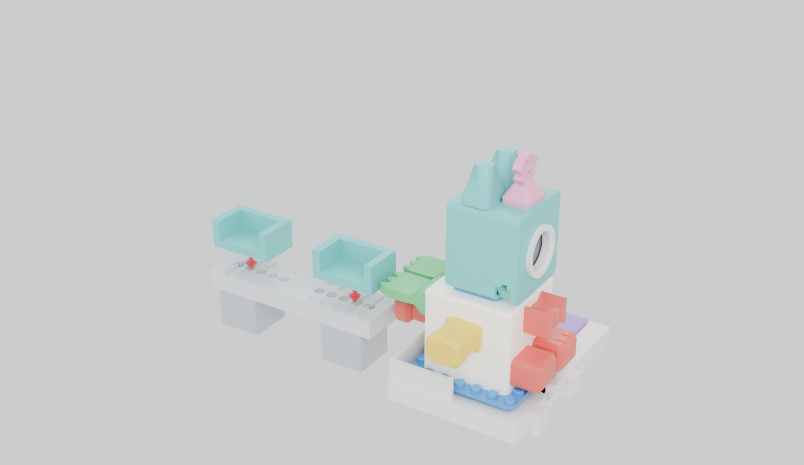